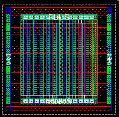
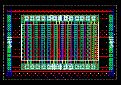
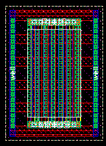

c4lmim width (x) and unit length (y) properties
these layouts show the effect of varying the width(x) and length(y) properties for an example c4lmim cap
unit width(x) = 10u, unit length(y) = 10.56u

unit width(x) = 10.56u, unit length(y) = 5u

unit width(x) = 6.08u, unit length(y) = 10u
